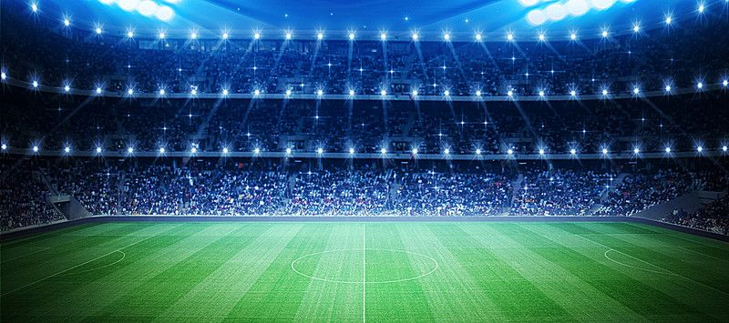

Another one of the world’s most popular sports games, not just in terms of the number of players but also spectators, football is one of the most loved and passionate games of all time. The origin of this game seems to be a mystery with some claiming that it is as old as the Romans. Some of the biggest gems of this fantastic sport are Cristiano Ronaldo, Lionel Messi , Pele, Diego Maradona, Gianluigi Buffon, etc. Each continent has its own league: Europe, Africa, Asia and South and North America. Also each country has its own league and the top 5 leagues in the world are Premier League, Bundesliga, La Liga, Serie A, andLigue 1.
